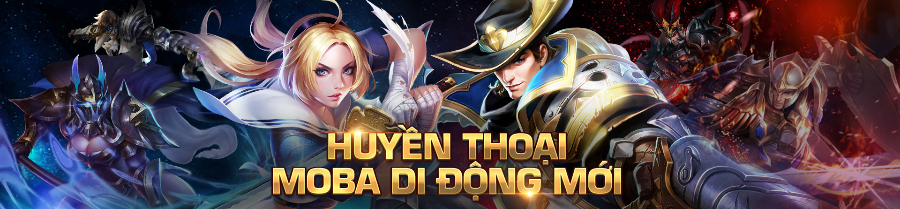
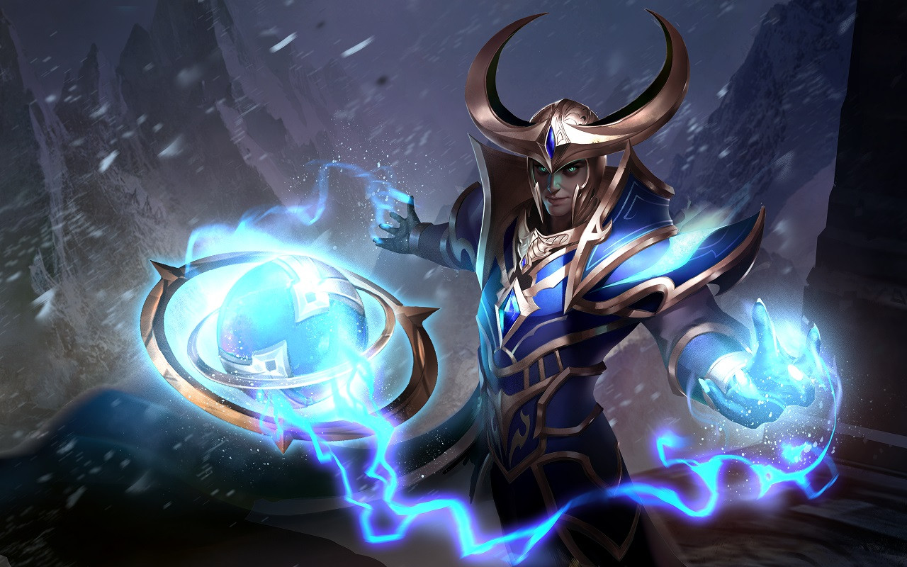

ALEISTER
Tiểu sử
"Tột cùng của dối trá là gì ngoài sự thật?''
Nhiều người có thể đã quên lãng, nhưng Aleister đã từng là một trong những ứng viên sáng giá của Cung điện ánh sáng. Đã từng có thời hắn cùng Yorn là cặp đôi xuất sắc, tài năng nhất của cả thế hệ trẻ Cung điện. Ấy thế mà Aleister, dẫu thông minh nhưng lại thiếu lòng tin, đã rơi vào sự mê hoặc của Veera rồi sa vào con đường bóng tối.
Aleister quả thật đã không phụ lòng tin của mọi người về tài năng của hắn, điểm khác biệt duy nhất là giờ đây lập trường của hắn đã thay đổi hoàn toàn. Bằng thiên phú kinh người, Aleister đã liên tục giúp lực lượng Sa đoạ giành được hết chiến thắng này đến chiến thắng khác trước quân phản kháng.
Vì nghĩa quên thân, Valhein dẫn đầu một lực lượng đặc nhiệm quyết ám sát gã phản đồ. Nhưng nào hay tất cả đã nằm trong dự tính của Aleister, hắn lặng lẽ thiết lập cạm bẫy rồi bất thình lình phản công khiến Valhein suýt nữa đã phải hi sinh.
"Muốn đấu trí với ta? Các ngươi đủ sức sao?"
Nhiều người có thể đã quên lãng, nhưng Aleister đã từng là một trong những ứng viên sáng giá của Cung điện ánh sáng. Đã từng có thời hắn cùng Yorn là cặp đôi xuất sắc, tài năng nhất của cả thế hệ trẻ Cung điện. Ấy thế mà Aleister, dẫu thông minh nhưng lại thiếu lòng tin, đã rơi vào sự mê hoặc của Veera rồi sa vào con đường bóng tối.
Aleister quả thật đã không phụ lòng tin của mọi người về tài năng của hắn, điểm khác biệt duy nhất là giờ đây lập trường của hắn đã thay đổi hoàn toàn. Bằng thiên phú kinh người, Aleister đã liên tục giúp lực lượng Sa đoạ giành được hết chiến thắng này đến chiến thắng khác trước quân phản kháng.
Vì nghĩa quên thân, Valhein dẫn đầu một lực lượng đặc nhiệm quyết ám sát gã phản đồ. Nhưng nào hay tất cả đã nằm trong dự tính của Aleister, hắn lặng lẽ thiết lập cạm bẫy rồi bất thình lình phản công khiến Valhein suýt nữa đã phải hi sinh.
"Muốn đấu trí với ta? Các ngươi đủ sức sao?"
CÔNG TY CỔ PHẦN GIẢI TRÍ VÀ THỂ THAO ĐIỆN TỬ VIỆT NAM
Văn phòng đại diện: Tầng 29, tòa nhà Trung tâm Lotte Hà Nội, số 54, đường Liễu Giai, Phường Cống Vị, Quận Ba Đình,
Thành phố Hà Nội, Việt Nam
Điện thoại: (04)7305-3939 | Fax: (04)3759-2429